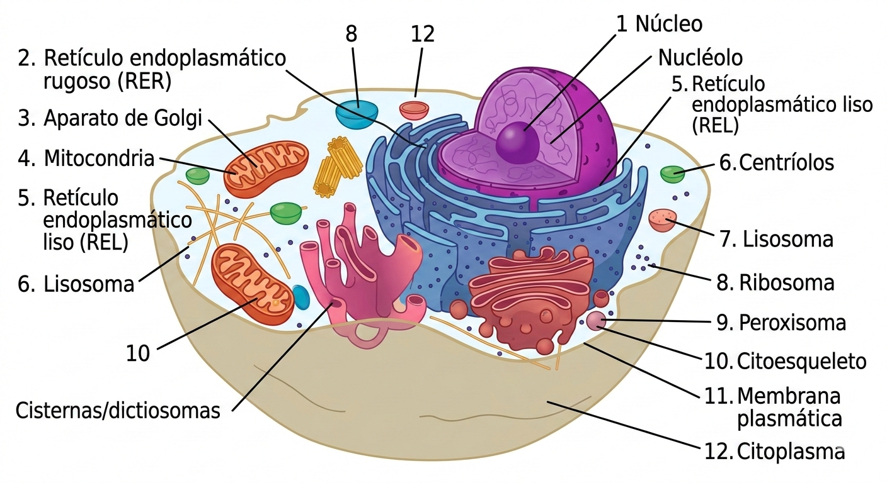

Resuelve los ejercicios. Si te pierdes, usa el botón de la izquierda. Suerte mi niña

Referencia: Diagrama de la Célula Animal1. ¿Cómo se llama el organelo en forma de saco que suele estar marcado cerca del número 3?
2. ¿Qué estructura cilíndrica (cerca de la posición 6 en parejas) ayuda en la división de la célula animal?
3. El armazón interno de la célula, distribuido por todo el citoplasma como un esqueleto, se llama:
4. ¿Dónde encontrarías cloroplastos?
5. ¿Qué estructura protege el ADN y coordina las funciones centrales?
6. ¿Quién fabrica las proteínas según las instrucciones del ARN?
7. ¿Cuál es el organelo que produce lípidos y carbohidratos?
8. "Central eléctrica" de la célula encargada del ATP (energía):
9. Organelo que elimina sustancias tóxicas y ácidos grasos:
10. ¿Qué organelo se encarga de la fotosíntesis?
11. ¿Cómo se llama el conjunto de sáculos o membranas aplanadas que forman el aparato de Golgi?
12. Las vesículas transportan sustancias dentro y fuera de:
13. Las enzimas de los lisosomas pueden eliminar:
Escribe la respuesta correcta (no olvides las tildes si es necesario):
14. Nombre del fluido compuesto de agua y sales donde flotan los organelos:
15. El retículo endoplásmico rugoso se llama así por la presencia de:
16. El pigmento principal de los cloroplastos es la:
17. ¿Qué organelo almacena agua y nutrientes (especialmente grande en plantas)?
18. El núcleo coordina la división, nutrición y ___________ celular.
19. ¿Cómo se llaman los sacos que transportan sustancias creados por el Golgi?
20. Los _________ son exclusivos de la célula animal.
21. La membrana externa del núcleo tiene ________ para permitir entrada y salida.
22. El nucleolo se encuentra en el interior del: